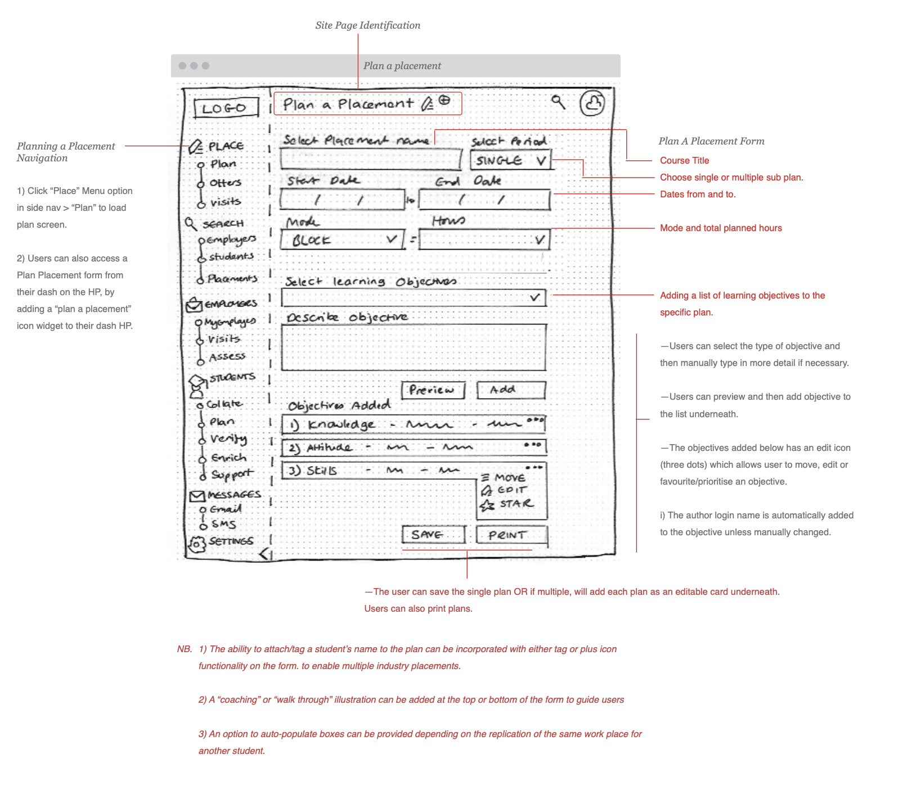
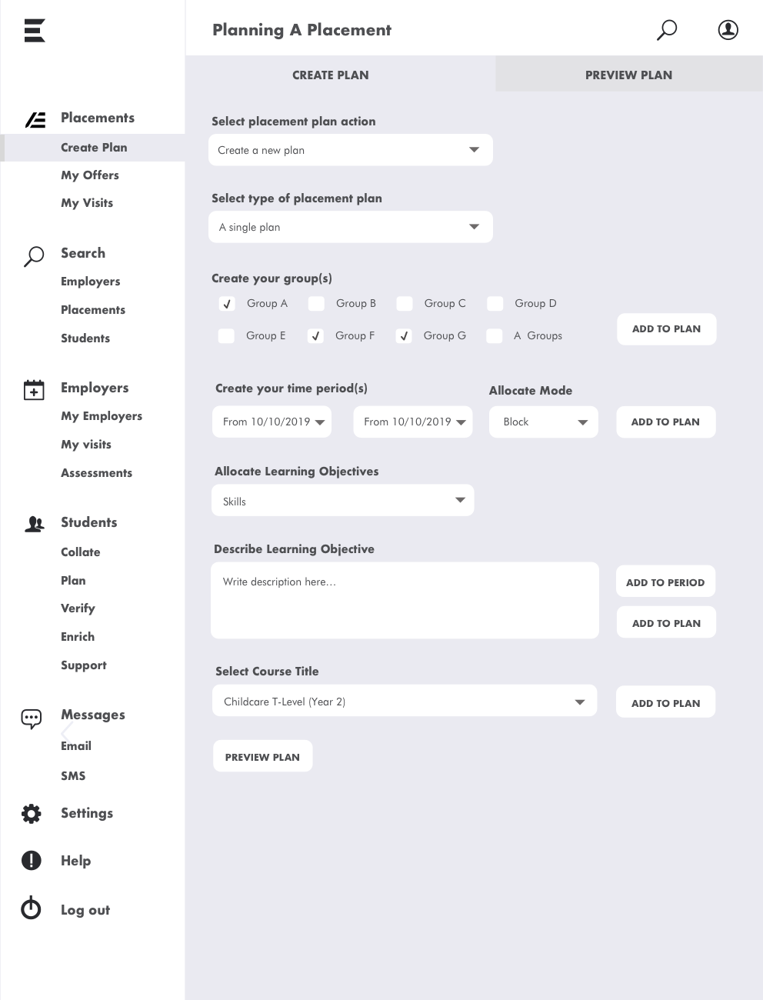

PlacePath: Designing a placement management platform from the ground up
Turning fragmented user requirements into a connected, development-ready product experience.
As Lead Product Design Consultant, I led the end-to-end design of PlacePath, a new placement management platform serving education providers, employers and students. Starting with user stories rather than an existing product, I translated requirements into connected user journeys, established the product structure, prioritised ten essential MVP capabilities with the CEO, and designed responsive experiences across desktop, tablet and mobile. My work established the core journeys, interaction patterns and UI foundation approved by the client and handed to engineering for development.

- Role
- Lead Product Design Consultant
- Users
- Placement teams, employers and students
- Product scope
- New responsive placement management product
- Ownership
- Product definition, journeys, wireframes, UI and handoff
01 — Understanding the problem
PlacePath was intended to bring placement coordination into one connected product for placement teams, employers and students. The CEO supplied product-owner research containing 15 high-level user stories, but there was no agreed MVP, product architecture or connected set of journeys.
Rather than translate each story directly into a screen, I needed to understand how the requirements related to the core task: creating and managing a placement.
My proposed approach
Recommend broader discovery
In my original proposal to the CEO, I recommended user interviews, focus groups and card sorting, followed by journeys, personas and iterative prototype testing.
The client opted to use interview research it already had. I worked with that evidence rather than implying the additional research had taken place.
The evidence available
Look beyond the feature list
One account in the supplied research described the pressure of coordinating placements for thousands of students with a very small administrative team.
That brought a sharper need into focus: reducing coordination effort, not simply digitising existing paperwork.
02 — Defining the product strategy and MVP
I worked through the existing research and stories with the CEO, separating essential user needs from functionality that would be useful later. My prioritisation question was simple: what must someone be able to do for the core placement journey to work?
That meant identifying dependencies between tasks — such as finding an employer, recording contact details, creating a placement and communicating progress — and preserving a coherent first release rather than treating every story as a feature request.
How I shaped the MVP
High-level user stories
Product-owner research and requirements supplied by the CEO
Map the core placement journey
Identify tasks, overlap, information dependencies and what makes a placement possible
Essential for the MVP
Must have
- Sign-in and role-specific access
- Placement planning and employer information
- Contacts, offers and communication
- Visits, notifications and supporting workflows
Defer until later
Nice to have
- Dashboard-style analytics
- Additional assessment and review forms
- Dedicated results and career-plan features
Align on scope with the CEO
Agree what to build now, what to defer and why
Core MVP capabilities
A focused, connected first-release scope for design and development
The product decision
Prioritise the essential placement journey, not the largest feature list. Working with the CEO, I reduced the wider set of requirements to ten core capabilities, with lower-priority features deferred so the product could remain focused and extensible.
03 — Designing the end-to-end experience
With the MVP scope defined, I mapped user flows to explore how the requirements connected across roles. I then used hand-drawn low-fidelity wireframes to investigate layouts, navigation and interaction patterns before developing the designs further in Sketch.



As the structure developed, I progressed towards high-fidelity responsive UI design, carrying the interaction decisions into the detailed interfaces.
04 — From design to development
The design direction was approved by the client and handed to developers. Development began, but the wider project was later put on pause before launch.


The client-approved work established the core product journeys, responsive patterns and UI foundation for development. The interactive prototype shown here is my later independent continuation and was not part of the commissioned client work.
05 — Bringing the experience to life
After the client project was paused, I independently developed the approved design direction into a working interactive prototype to explore how the complete product could feel and behave. This later prototype was not part of the commissioned client work.